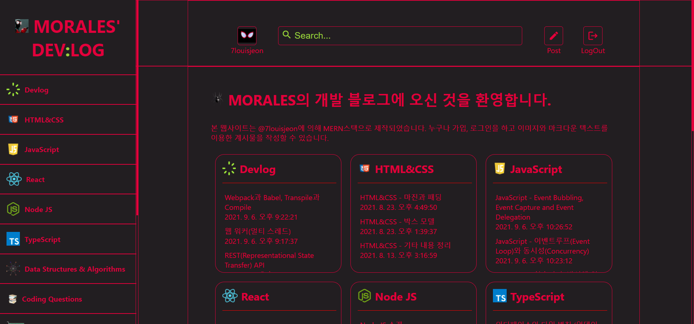
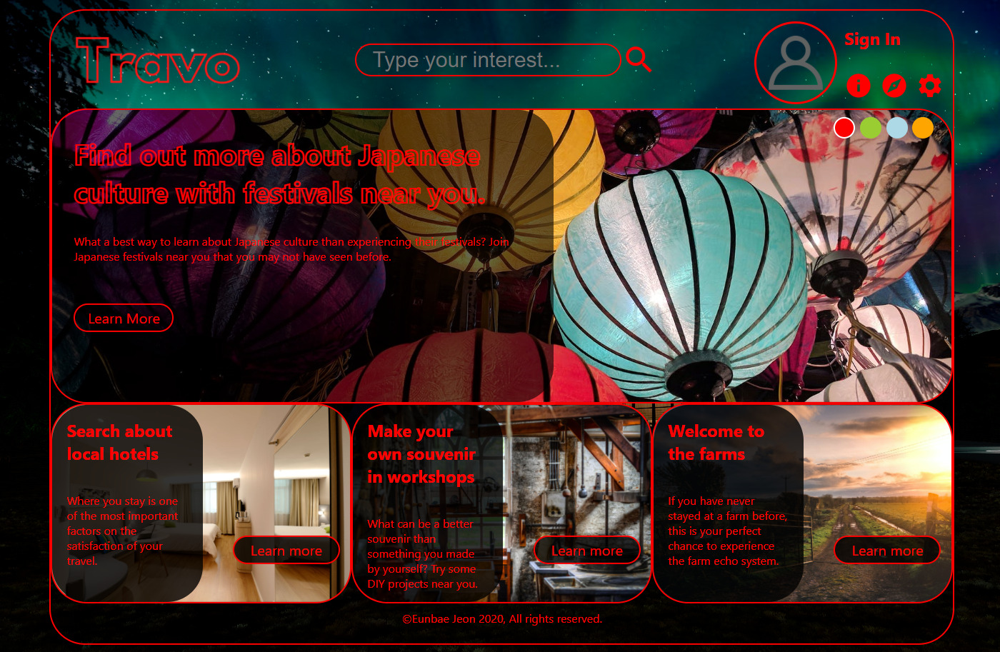
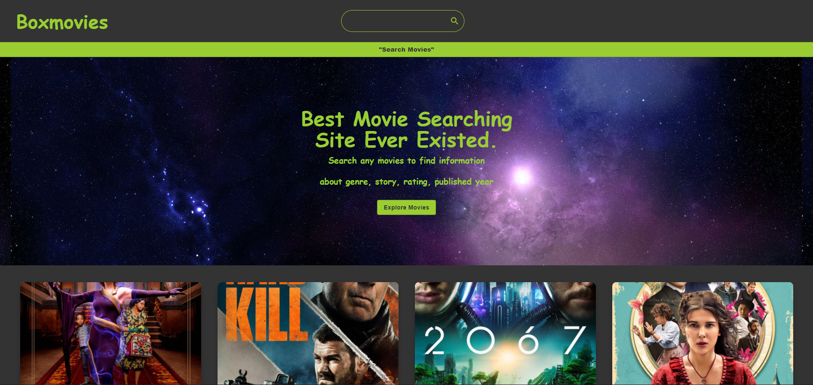
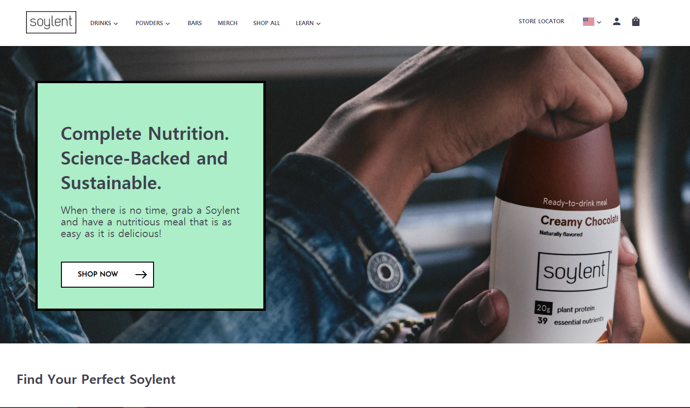

- 안녕하세요, 성장에 목마른 개발자 전은배입니다.
- 개발, 피아노, 음악 프로듀싱 등 다양한 취미를 가지고 있습니다.
- TypeScript나 Sass등의 최근 기술에 관심이 많습니다.
- NodeJS, MongoDB등을 마스터하여 풀스택 개발자가 되는것이 목표입니다.
PROJECTS
-
Morales' Devlog (MERN스택 블로그 웹사이트)

- 계정 등록, 로그인, 검색 및 이미지와 마크다운 계시글 작성 기능이 있는 크로스 플랫폼 블로그 사이트입니다.
- MERN스택을 이용하여 제작되었습니다.
- 방향키로 navigation이 가능한 검색창을 구현하였습니다.
- 회원등록, 로그인 및 bcrypt 암호화를 구현하였습니다.
- 미디어쿼리를 통해 모바일, 태블릿 및 다양한 사이즈의 PC에서 사용 가능하도록 제작하였습니다.
- Heroku에 풀스택으로 배포하였습니다.
- Github: https://github.com/7louisjeon/morales-devlog
-
Travo (React 프론트엔드 프로젝트)

-
Boxmovies (React 프론트엔드 프로젝트)

-
Datafactory (React 프론트엔드 프로젝트)

-
Soylent Clone (Git Flow 협업 연습용 프로젝트)
